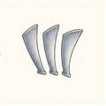
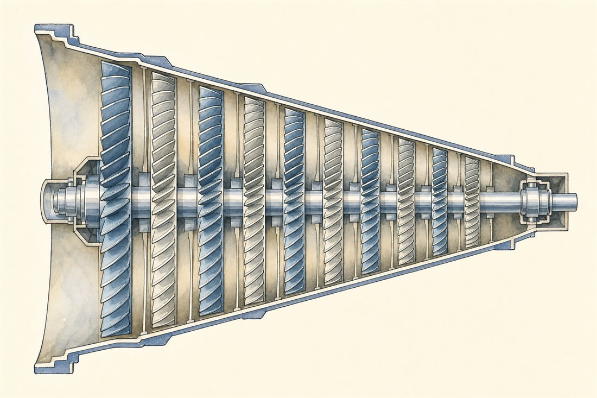
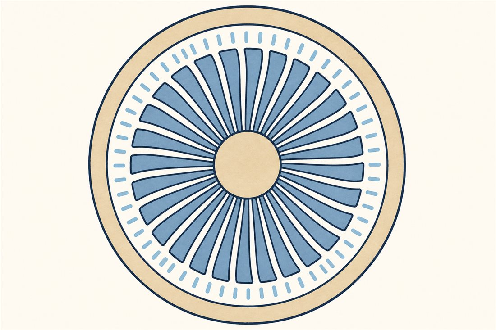
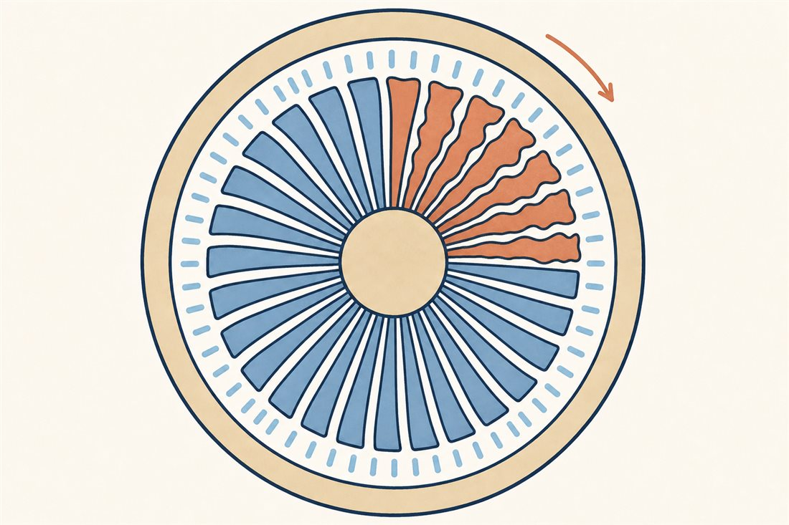
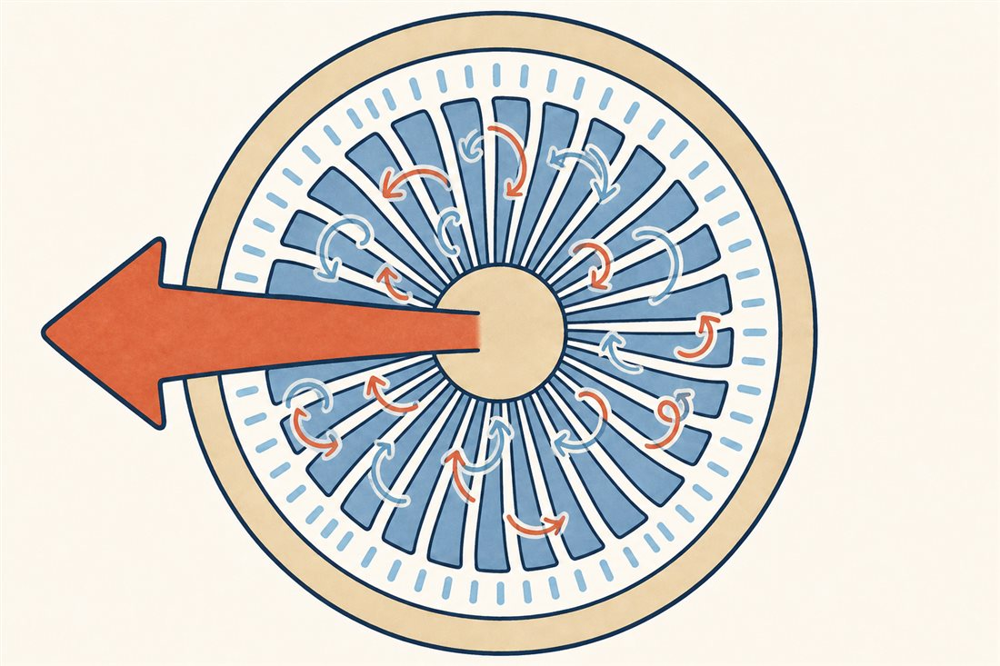

第2巻 だい6わ ── 圧縮機の章風に さからう、はねの行列
コアの入口へ潜ります。燃やす前に、空気はぎゅっと縮めておく必要があります（圧力比が高いほど熱機関は効率が良い——第1巻第4話のサイクルの話と同じ理屈）。現代のエンジンは吸った空気を40倍以上に押し縮めますが、じつはこれ、タービンよりはるかに難しい仕事です。なぜなら圧縮とは、空気にとっての「のぼり坂」（逆圧力勾配）を、流れに登らせ続けることだから。第1話で翼を失速させたあの敵が、ここでは何百枚の翼に常時張り付いています。
その解決が「はねの行列」。回る翼の列（動翼）と止まった翼の列（静翼）を交互に並べ、1段あたりおよそ1.2〜1.4倍（段と設計によります）というささやかな坂を、10数段かけて登り切ります。欲張らないことが、この機械の知恵です。

この繊細な行列は、流量が減ると機嫌を損ねます。局所の失速がぐるぐる回る旋回失速と、系全体が脈打つサージ——性格の違うふたつの不安定が、圧縮機の二大トラブルです。



よりみちなぜ1段で1.4倍しか縮められないのか
タービンは1段で大仕事ができます。流れが加速する「くだり坂」だから、境界層はご機嫌のまま。ところが圧縮機の翼列は流れを減速させて圧力を回復する「のぼり坂」で、減速のさせすぎ（拡散のしすぎ）は境界層の剥離＝失速に直結します。だから1段の圧力比は亜音速段で1.2〜1.3ほどが相場（先端が遷音速の前段ではもっと欲張れます）で、40倍を稼ぐには10数段の行列になる。タービン屋と圧縮機屋の人数が違うのは、物理の非対称のせいです。第1巻第5話のロケットポンプと並べると面白い——ポンプの宿敵はキャビテーション、圧縮機の宿敵は失速。どちらも「吸い込み側」に急所がある機械です。
よりみちサージとのつきあい方
サージは翼1枚の失速ではなく、圧縮機と、その前後の容積・配管まで含めた系全体の不安定です。押し込む力が需要に負けた瞬間、ためた高圧空気が逆流し、また押し込み、また逆流——爆音と炎を伴う脈動になります。守りは三段構え。①可変静翼（VSV）の角度スケジュールで下流の動翼への流入角を整える、②抽気弁で行き場のない空気を逃がす、③そして軸を分ける——前の段と後ろの段を別々の回転数で回す2軸化（RRはさらに3軸）。「みんなを同じ軸で回すと誰かが我慢する」問題への、GTFのギアとは別の答えがここにあります。第9話の対決の伏線です。
 流体屋のためのノート
流体屋のためのノート
圧縮機の運転は圧縮機マップ（横軸: 修正流量、縦軸: 圧力比、回転数一定線の束）で語られます。作動線とサージラインの距離＝サージマージンが設計の通貨。旋回失速のセルは静止系でロータと同方向・回転の半分ほどの速さで伝播し（ロータ相対では後退）、旋回失速に落ちるかサージに落ちるかのモード選択はGreitzerのBパラメータ——プレナムの圧縮性とダクト慣性の相対——が左右し、サージ振動にはヘルムホルツ型の系力学が現れる。翼列の局所空力と、ダクト音響・容積の系力学が結婚した現象で、定常CFDが最も苦手とする領域です。設計空間は流量係数φ・負荷係数ψの無次元平面で歩くのが正道。あなたのロケットポンプの世界とは、比速度の言葉でつながっています——空気か液体か、縮むか縮まないか、そしてNPSHかサージマージンか。次話は行列の出口、火の部屋へ。
{kind=link}
・N. Cumpsty, Jet Propulsion／P. Hill & C. Peterson, Mechanics and Thermodynamics of Propulsion（圧縮機・サージ）
・E. M. Greitzer, "Surge and Rotating Stall in Axial Flow Compressors" (1976)
・全体圧力比の例: Wikipedia "CFM International LEAP"（OPR 40）